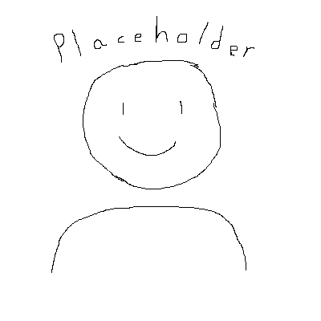
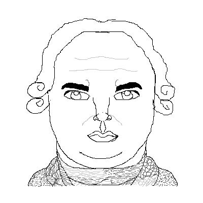
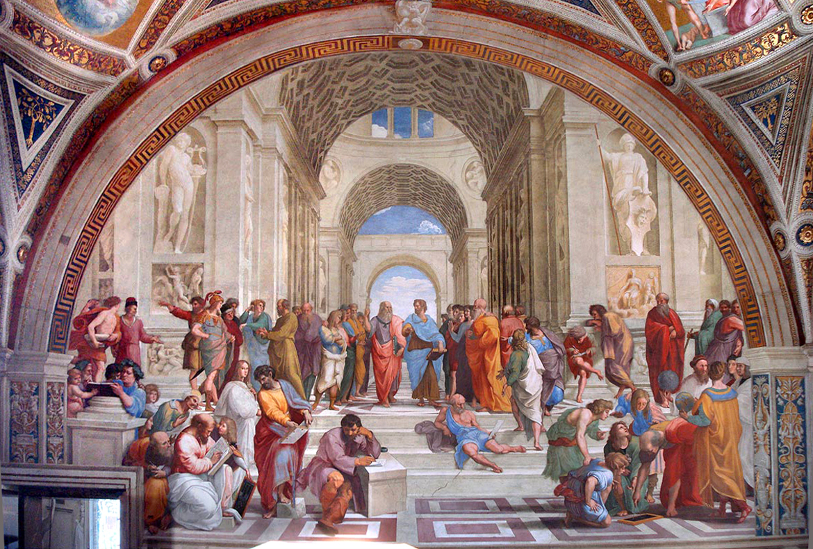

Crença
Uma crença é o estado mental em que uma pessoa assume que algo é verdadeiro, real ou provável, mesmo sem provas científicas definitivas.
Uma crença é o estado mental em que uma pessoa assume que algo é verdadeiro, real ou provável, mesmo sem provas científicas definitivas.
Objeto de estudo da epistemologia. Desde Platão, crença verdadeira justificada (CVJ).
Em filosofia, quando queremos definir um conceito, procuramos as condições necessárias e suficientes (clica aqui se já estiveres esquecid@). A nossa primeira tarefa será precisamente esta: descobrir quais são as condições necessárias e suficientes para definir conhecimento.
| Tipo de conhecimento | Descrição | Exemplo |
|---|---|---|
| Saber-que ou conhecimento proposicional | Saber que se expressa em conteúdos ou pensamentos que são portadores de verdade (conhecimento de factos ou de verdades). | Sei que Sísifo foi condenado a empurrar uma enorme pedra montanha acima. |
| Conhecimento por contacto | Conhecimento que implica estar ou ter estado em contacto direto com o objeto (conhecimento de coisas ou lugares) | Conheço a montanha em que Sísifo é obrigado a empurrar a pedra. |
| Saber-como ou conhecimento por aptidão | Saber relacionado com aptidões ou habilidades intelectuais, físicas ou práticas (saber-fazer). | Sísifo sabe empurrar pedras montanha acima. |
Apesar de haver diversos tipos de conhecimento, o tipo que nos interessa investigar é o conhecimento proposicional ou saber-que. É a ele que nos referiremos neste processo de clarificação, porque nos permite analisar com maior precisão as condições que tornam uma crença num verdadeiro conhecimento
Tradicionalmente, define-se conhecimento como sendo crença verdadeira justificada. Esta definição, também conhecida como teoria CVJ ou definição, remonta à Grécia Antiga e a Platão, e é referida na sua obra Teeteto.

Platão foi um importante filósofo da Grécia Antiga, nascido em Atenas, por volta de 427 a.C. O seu nome verdadeiro era Aristócles, mas ficou conhecido como Platão (de platon, largo), graças à sua compleição física atlética. Foi discípulo de Sócrates e professor de Aristóteles, tendo influenciado profundamente a filosofia ocidental. Fundou a Academia de Atenas, uma das primeiras instituições de ensino superior do mundo ocidental. Nas suas obras, abordou temas como a justiça, a política, a educação, a verdade e o conhecimento. Uma das suas ideias mais conhecidas é a Teoria das Ideias, segundo a qual o mundo que vemos é apenas uma representação imperfeita de uma realidade perfeita e imutável. Entre as suas obras mais famosas destacam-se A República, O Banquete e Fédon. Platão morreu em Atenas, por volta de 347 a.C., deixando um legado fundamental para a história da filosofia.
Uma crença é um tipo particular de estado mental. Acreditar que Sísifo é infeliz é representar na nossa mente o mundo de uma dada forma. Todo o conhecimento tem, por isso, de ser crença. A crença é uma condição necessária, mas não suficiente para o conhecimento. Saber sem acreditar é uma impossibilidade, mas é possível crer em falsidades. Por exemplo, eu posso acreditar que Os golfinhos são peixes, enquanto que a realidade aponta que é um mamífero.
Para haver conhecimento, é necessário que as nossas crenças sejam verdadeiras. A crença têm conteúdo proposicional, podendo então ser verdadeiras ou falsas. Será verdadeira se, e só se, tal crença for um facto. Estamos perante uma crença falsa, caso a nossa crença não esteja em conformidade com a verdade. Todo o conhecimento é crença verdadeira, ou, por outras palavras, a verdade é uma condição necessária para o conhecimento. Mas será esta suficiente? Vejamos o seguinte exemplo:
Poderá isto ser considerado conhecimento? Não, visto que a verdade da crença foi mero fruto do acaso. Não havia qualquer evidência, cálculo físico ou razão válida para sustentar essa afirmação antes de a moeda cair.
Tal como a crença e a verdade são condições necessárias, mas não suficientes para conhecimento, o mesmo aplica-se à justificação. Porquê? Uma justificação, ou seja, uma razão para acreditar, é geralmente constituída por uma premissa ou conjunto de premissas que aumentam a probabilidade de a crença, a conclusão, ser plausível. No entanto, tais premissas podem ser falsidades. Durante séculos, acreditou-se, falsamente, que a terra estava no centro do universo. Esta crença era justificada pela observação da suposta rotação do Sol à volta da terra. No entanto, não era conhecimento porque é uma falsidade.
Concluindo, algo é conhecimento se e só se for crença verdadeira justificada. Mas será que esta definição é suficiente?
Edmund Gettier (1927-2021) foi um filósofo norte-americano, nascido em Baltimore, nos Estados Unidos. Ficou conhecido pela sua contribuição para a epistemologia, área da Filosofia que estuda o conhecimento. Em 1963, publicou o artigo Is Justified True Belief Knowledge? ("Será a crença verdadeira justificada conhecimento?"), no qual questionou a definição tradicional de conhecimento como uma crença verdadeira justificada. Através de exemplos, demonstrou que uma pessoa pode ter uma crença verdadeira e justificada sem realmente possuir conhecimento. As suas ideias ficaram conhecidas como Problema de Gettier e tiveram um grande impacto na Filosofia contemporânea, levando vários filósofos a procurar novas definições de conhecimento. Gettier tornou-se, assim, uma figura fundamental no debate filosófico sobre o que significa verdadeiramente saber alguma coisa.
Gettier argumenta que crença, a verdade e a justificação, apesar de serem condições suficientes para o conhecimento, são insuficientes para o definir. Ou seja, falta alguma condição que não está na definição CVJ. Vejamos o seguinte exemplo:
O Martim Maganinho Bispo entra em uma sala com um relógio de parede que marca exatamente 14h30. Ele tem todos os motivos para acreditar que são 14h30 porque aquele relógio tem trabalhado bem ao longo dos anos. E realmente eram 14h30. No entanto, o relógio estava sem pilha.
Esta crença verdadeiramente justificada é fruto do acaso. Um relógio estragado está certo duas vezes por dia. Assim, argumenta Gettier que não é por ser CVJ que seja conhecimento.
Infelizmente, até hoje não há consenso entre os filósofos sobre a definição correta de conhecimento. Gettier limitou-se a apresentar contraexemplos à teoria CVJ.
Perspectiva que nega, total ou parcialmente, a possibilidade do conhecimento.
Tal como no determinismo, há duas possibilidades: ceticismo radical ou pirrónico e ceticismo moderado ou mitigado.
O ceticismo localizado (moderado ou mitigado) afirma que alguns juízos são falíveis e que não podemos ter conhecimento sobre certas categorias de factos (as outras mentes, Deus, o futuro, ...).
O ceticismo radical ou pirrónico afirma que não podemos saber o que quer que seja acerca do mundo. Nenhuma das nossas crenças está suficientemente justificada para poder contar como conhecimento, restando-nos apenas a suspensão do juízo. Esta perspectiva é popularizada por Pirro de Élis.
Pirro de Élis (360 a.C. - 270 a.C.) foi um filósofo grego da Antiguidade, fundador do Pirronismo, uma corrente filosófica que deu origem ao ceticismo. Defendia que não podemos ter a certeza absoluta sobre a verdade das coisas e que, por isso, devemos evitar fazer julgamentos definitivos. Segundo Pirro, ao suspendermos os nossos juízos, conseguimos alcançar a tranquilidade da mente. Uma das histórias mais conhecidas sobre Pirro aconteceu durante uma viagem de barco. Conta-se que, durante uma tempestade, enquanto os restantes passageiros estavam assustados, Pirro manteve-se tranquilo e apontou para um porco que continuava a comer calmamente, usando-o como exemplo de como se deveria viver sem perturbações, mesmo perante situações difíceis.
Independentemente do tipo de ceticismo que estivermos a falar, não o podemos ignorar pois levantam questões importantes acerca da possibilidade do conhecimento. Enfrentar o problema da possibilidade do conhecimento é, pois, procurar responder ao desafio cético.
Os céticos não duvidam da definição de conhecimento, mas sim da sua possibilidade. Afirmam que algumas das nossas crenças podem ser verdadeiras, no entanto rejeitam a possibilidade de as justificar. O seguinte argumento resume a perspectiva cética:
Como não podemos questionar a sua estrutura (validade), teremos de questionar o seu valor de verdade para concluir se é um bom ou mau argumento (solidez).
Os argumentos céticos que vamos explorar são os seguintes:
Dissemos que há conhecimento quando as nossas crenças verdadeiras estão justificadas, isto é, quando temos boas razões para acreditar que as crenças que temos são verdadeiras. Acontece que apelar a boas razões para justificar uma dada crença é suportá-la em outras crenças que possuímos. E isto levanta um desafio importante, o da regressão da justificação. Vejamos um exemplo:
O relógio está uma hora atrasado porque houve alteração do horário do inverno para o horário do verão. Houve esta alteração porque estamos no último domingo de março e as convenções do tempo estabelecem que, no hemisfério norte, nesta data, os relógios adiantam uma hora. Os relógios adiantam uma hora para ....
De acordo com o ceticismo, quando pretendemos justificaar uma crença por intermédio de outras crenças estão disponíveis apenas três alternativas (trilema de Agripa)
Segundo os céticos, nenhuma destas opções resolve o problema.
Perspectiva segundo a qual os objetos têm uma existência independente dos sujeitos que os percecionam.
Regra geral, no quotidiano, partimos de uma perspectiva realista.
Existem dois tipos de realismos: o realismo direto ou ingénuo (realismo de senso comum), que defende que o mundo exterior existe e esse mundo é como o percecionamos. Os nossos sentidos são confiáveis e dão-nos uma imagem fidedigna desse mundo, e o realismo indireto ou crítico, que defende que os objetos existem independentemente das nossas mentes, mas não exatamente como os percecionamos.
É no realismo indireto que nos vamos focar, precisamente pela possibilidade de ilusão ou até alucinação.
Vejamos a imagem acima. Esta colher intacta aparenta estar partida graças ao fenómeno físico da refração da luz. Isto é um dos muitos casos que aponta a falibilidade dos nossos sentidos. Se os sentidos nos enganam algumas vezes, então nunca podemos ter a certeza de não estarmos a ser iludidos por eles.
Quem nunca teve um sonho que aparentava ser real até acordar? O argumento do sonho consiste precisamente nisto. Como poderemos saber que a nossa aparente realidade não é um mero sonho? Os céticos afirmam que é impossível saber.
O cérebro numa cuba é uma experiência mental em que:
O cérebro recebe exatamente os mesmos estímulos que receberia se estivesse num corpo real, vivendo no mundo real.
Assim, tal como no argumento do sonho, a pessoa acredita que está a viver normalmente. No entanto, o cientista pode simular coisas que podem ou não existir e controlar-te.
Haverá motivo para negar esta possibilidade? Muitos filósofos afirmam que não.
O ceticismo radical é autorrefutante. Se afirmamos que não podemos conhecer nada e essa crença for verdadeira e apoiada pelos argumentos céticos, estamos a formar uma crença verdadeira justificada, ou seja, conhecimento.
A seguir, veremos as criticas e tentativas de René Descartes e David Hume de superar o ceticismo.
René Descartes (1596-1650) foi um filósofo, matemático e físico francês, considerado um dos fundadores da filosofia moderna. Nasceu a 31 de março de 1596, em La Haye, França. É conhecido pela famosa frase "Penso, logo existo", que representa a ideia de que o pensamento é a primeira certeza que o ser humano pode alcançar, e pelo referencial cartesiano utilizado na matemática até aos dias de hoje. Desenvolveu o método da dúvida metódica, segundo o qual devemos questionar todas as ideias até encontrar verdades que não possam ser postas em causa. Na matemática, contribuiu para o desenvolvimento da geometria analítica, relacionando a álgebra com a geometria. Entre as suas obras mais importantes destacam-se O Discurso do Método (1637) e Meditações sobre a Filosofia Primeira (1641). Morreu a 11 de fevereiro de 1650, na Suécia, deixando um importante legado para a filosofia e para a ciência.
Teorias epistemológicas que identificam como fonte do conhecimento o pensamento ou razão.
Crenças básicas que não são suportadas por quaisquer outras crenças e que são infalíveis (não podem estar erradas) e indubitáveis (não podem ser postas em dúvida).
Perspectiva epistemológica acerca do modo como se estrutura a justificação do conhecimento.
Perspectiva epistemológica que sustenta que o verdadeiro conhecimento exige uma certeza absoluta, incapaz de qualquer erro ou dúvida.
O racionalismo despreza o papel dos sentidos e defende que um conhecimento para poder merecer de facto esse nome deve satisfazer dois critérios: necessidade lógica e universalidade. Para que tal seja possível, o ideal de conhecimento racionalista pressupõe a natureza dedutiva do saber a partir de primeiros princípios ou crenças fundacionais. O racionalismo é uma perspectiva fundacionalista e infalibilista. De acordo com esta teoria, podemos pensar no conhecimento como um edifício: sem os alicerces, ele não se consegue sustentar.
É aquilo que não pode ser de outro modo; aquilo cuja inexistência ou negação implicaria uma contradição.
É aquilo que é, mas poderia ser diferente ou poderia não existir; depende de condições, de causas ou do acaso.
Conhecimento anterior à experiência, baseado somente na razão.
Exemplo: "Um triângulo é um polígono com três lados e três ângulos."
Conhecimento posterior à experiência, baseado na experiência sensivel.
Exemplo: "O ferro dilata com o calor."
O conhecimento a priori, sendo independente da experiência sensível e absolutamente certo (necessário). Já o conhecimento a posteriori diz respeito às coisas que apenas podemos saber em função da experiência sensível, não sendo absolutamente certo (contingente).
Adjetivo que qualifica tudo aquilo que segue um método, uma ordem lógica, uma regra ou um plano predefinido.
Dúvida voluntária, provisória, universal, hiperbólica e sistemática. A rejeição de qualquer crença que possa ter o mínimo de dúvida associada (como por exemplo, conhecimento a posteriori) e descobrir princípios indubitáveis a partir dos quais possa derivar outras crenças.
A incerteza e a confusão reinavam na época de Descartes. Após o abalo do modelo geocêntrico, instalou-se o ceticismo e a dúvida nas pessoas. Por este motivo, Descartes procura uma solução a partir da própria dúvida cética.
O objetivo de Descartes era deitar o anterior “prédio do conhecimento” abaixo para erguer um novo com alicerces indestrutíveis.
Podemos afirmar que a dúvida cartesiana é metódica: é o meio, com um plano predefinido, para descobrir o absolutamente verdadeiro, ou seja, a ferramenta da razão que permite evitar o erro e prosseguir com segurança.
Descartes, embora tenha como ponto de partida a dúvida cética, não é um cético. Pelo contrário, a dúvida cartesiana tem como propósito combater e refutar o ceticismo, ou seja, demonstrar que temos de facto conhecimento - crenças verdadeiramente justificadas.
Para que o seu método seja eficaz, nada pode escapar à dúvida, que é universal e, tal como referido pelo filósofo, hiperbólica (ou excessiva), levada às últimas consequências, ao limite do improvável. Assim, Descartes descarta (haha) qualquer crença que tenha um mínimo pingo de dúvida associado, por mais absurdo que possa ser.
Muitas das crenças que habitualmente aceitamos como verdadeiras foram recebidas através dos sentidos. Será a experiência sensorial uma fonte confiável de verdade?
À semelhança da tradição cética, Descartes começa por constatar que os sentidos por vezes nos enganam. Distorções, ilusões ou alucinações perceptivas são experiências que, em algum momento, todos nós já vivenciamos. Sendo perfeitamente possível que os objetos empíricos não correspondam exatamente ao que deles percebemos pelos sentidos, as crenças recebidas por esta via não resistem à dúvida. Não sendo infalíveis, não podem o alicerce que tanto procuramos. Devem ser assim, rejeitados.
Tal como já apresentado anteriormente pelos céticos, temos o argumento do sono em conflito com a dúvida. Contrariando o realismo de senso comum, a ausência de um critério seguro que permita diferenciar o sono da vigília abre a possibilidade de as suas percepções atuais, ainda que vívidas e nítidas, serem falsas. Qual de vós nunca teve um sonho que não conseguiu distinguir da realidade até acordar? Havendo dúvida, devemos rejeitar, mais uma vez, os sentidos.
Consideremos, então, a hipótese de estarmos, de facto, a sonhar. Ainda que assim fosse, continuaria a ser inquestionável, parece, que um triângulo tem sempre três lados, que dois mais dois são quatro em qualquer circunstância, que Descartes tem um corpo e que o mundo das coisas materiais fora da sua mente existe. Poderá a dúvida estender-se também a estas outras crenças semelhantes? Descartes introduz a absurda, mas possível, possibilidade da existência de um génio maligno cujo único objetivo é trocar-nos a razão. Um tal ser poderia fazer-nos acreditar em falsidades. Esta hipótese lança agora a desconfiança sobre as crenças que frequentemente tomamos como certas, tal como as verdades matemáticas. Novamente, havendo dúvida, devemos rejeitar o conhecimento a priori.
Substância pensante descoberta por intuição racional a partir do exercício da dúvida. Primeira verdade indubitável do sistema cartesiano, a partir da qual é reconstruído, desde as fundações, por dedução, o edifício de conhecimento.
Mas… rejeitando ambos o conhecimento a priori e o conhecimento a posteriori, o que resta? Tendo razões para suspeitar de tudo, será que o ceticismo dominou Descartes? No fim do túnel, Descartes viu uma pequena luz, trazido-lhe pela intuição pura - a primeira certeza invulnerável à dúvida: a existência do sujeito que duvida. A dúvida atua sobre todos os objetos do conhecimento, mas não pode atuar sobre a existência daquele que assim duvida. Duvidar é pensar e para pensar é preciso existir. Mesmo que sejamos um cérebro numa cuba, é necessário o cérebro para pensar. Pensar é, pois, condição suficiente para existir: penso, logo existo (cogito ergo sum). Seria racionalmente contraditório pensar e não existir. A existência do eu que pensa (ou cogito) é assim uma certeza inabalável que resiste, inclusivamente, à dúvida hiperbólica, à extravagante ficção de um génio maligno que deliberadamente o enganasse.
Resumo:
O génio maligno pode fazer-me acreditar em falsidades.
Não há nada que eu possa ter a certeza.
Mas, quando eu afirmo, eu sou, não posso estar enganado sobre isso.
O génio maligno só me pode fazer crer em falsidade se eu realmente existir.
Penso, logo existo.
Critério de verdade, de certeza racional na epistemologia cartesiana. Qualidades das quais não se pode duvidar, por muito que se tente e queira. Evidência.
A descoberta da existência do sujeito que pensa, do cogito, acontece não por inferência a partir de outras crenças ou conhecimentos, mas por intuição racional ou intelectual, isto é, por conhecimento direto e imediato, sem qualquer raciocínio e sem qualquer dúvida. Trata-se de uma evidência.
Teoria segundo a qual o ser humano é constituído por duas substâncias distintas e independentes: a mente (res cogitans) e o corpo (res extensa).
Conjunto de propriedades fundamentais, permanentes e imutáveis que definem o que uma entidade ou substância é, e sem as quais ela deixa de ser o que é.
Coisa pensante, substância mental cuja essência é pensar.
Coisa extensa, substância material cuja essência é ocupar espaço. Caracteriza-se por ser divisível, possuir dimensões (comprimento, largura e profundidade) e estar sujeita às leis da física.
Apesar de serem substâncias distintas, Descartes considera que a mente e o corpo estão unidos no ser humano e interagem entre si.
Por exemplo:
Perspectiva epistemológica segundo a qual nada pode ser conhecido, à exceção do próprio eu e dos conteúdos da sua consciência.
Ao examinar a sua mente, Descartes encontra três tipos distintos de ideias:
A este propósito, diz Descartes, persistem, contudo, interrogações e possibilidades de erro. Todas estas ideias podem não ser mais do que ideias factícias (criações da nossa mente), por exemplo. Como ainda não conhece a origem das suas ideias, não pode ter a certeza de que ideias como o Sol ou o calor existem realmente fora da sua mente, nem de que correspondem à realidade. Que garantia há de que o que é concebido como claro e distinto é de facto absolutamente verdadeiro? Aparentemente nada. A hipótese de estar a ser enganado por um génio maligno não está ultrapassada e leva-o a duvidar de quase tudo.
Assim, Descartes procura uma maneira de descartar esse génio maligno. Caso não consiga, corre o risco de cair no solipsismo.
Ser omnipotente (todo poderoso), omnisciente (todo sabido), omnipresente (presente em todo o lado) e omnibenevolente (todo bondoso).
Tendo em conta que a desconfiança sobre os sentidos ainda é presente, os seguintes argumentos têm como base a razão. Descartes parte da ideia de perfeição que tem dentro de si.
O argumento da marca impressa apoia-se na ideia de causalidade:
Assim, Deus existe como uma ideia inata da ação do artista (Deus) na sua obra (nós).
Concluímos anteriormente, Deus existe. Mas, o que nos autoriza afirmar que este ser perfeito não é enganador? A infinita bondade divina, que está incluída na sua perfeição. Se Deus é perfeito, terá todas as todas as perfeições. A bondade é mais perfeita do que a maldade. Um ser todo bondoso e todo poderoso não teria a intenção de nos enganar e protegeria-nos de qualquer outro possível ser com intenção de nos enganar.
Deus garante que aquilo que é concebido como evidente é necessariamente verdadeiro, incluindo a realidade das coisas propostas fora da sua mente, o conhecimento empírico e as verdades da matemática e da geometria. É agora uma mente e um corpo e não apenas uma coisa pensante.
Com Deus como garante epistemológico, Descartes pode agora inferir por dedução outras verdades e reconstruir, com toda a segurança e confiança, um edifício ou um sistema de crenças verdadeiramente justificadas.
Na ordem da investigação, Deus é a segunda crença descoberta por Descartes e a mais importante, pois garante quaisquer outras.
David Hume, filósofo do século XVIII que vamos estudar a seguir, afirma que a dúvida cartesiana é impraticável pela própria natureza humana. Nós não conseguimos duvidar de absolutamente tudo. Pensem no ceticismo radical: embora se tenha em mente que nenhum conhecimento é possível, ainda se tem em mente conhecimento prático.
É apontado que Descartes cometeu uma petição de princípio, conhecida de tal modo que esta objeção é conhecida como círculo cartesiano. Este argumento critica o facto do filósofo sustentar que Deus existe porque o concebe como uma ideia clara e distinta em estar certo que as ideias claras e distintas são verdadeiras, pois Deus existe.

David Hume (1711-1776) foi um filósofo, historiador e economista escocês, considerado uma das figuras mais importantes do Iluminismo e da filosofia moderna. Nasceu a 7 de maio de 1711, em Edimburgo, na Escócia. Ficou conhecido pelas suas ideias sobre o conhecimento humano, defendendo que este tem origem na experiência e na observação, e não apenas na razão. Esta corrente filosófica ficou conhecida como empirismo. Hume também questionou a existência de ideias inatas e analisou temas como a causalidade, a religião e a natureza humana. Entre as suas obras mais importantes destacam-se Tratado da Natureza Humana (1739-1740) e Investigação sobre o Entendimento Humano (1748). Morreu a 25 de agosto de 1776, em Edimburgo, deixando uma influência significativa na filosofia, especialmente no desenvolvimento do empirismo e do pensamento crítico.
Teorias epistemológicas que identificam como fonte do conhecimento a experiência sensível (visão, tato, olfato, …)
Em oposição ao racionalismo, encontra-se o empirismo. A seguinte tabela apresenta uma comparação entre ambos:
| Racionalismo | Empirismo | |
|---|---|---|
| Origem do conhecimento | Razão | Experiência sensível |
| Principal fonte do conhecimento | Lógica e dedução | Observação e experimentação |
| Sentidos | Podem enganar, não são fiáveis | Essênciais para obter conhecimento |
| Há conhecimento à nascença? | Sim, como a ideia de perfeição | Não, somos como uma tábua rasa |
| Principais filósofos | Descartes, Espinosa e Leibniz | Hume, Locke e Bacon |
À semelhança do racionalismo, o empirismo também defende o funcionalismo e o infalibilismo, ou seja, o conhecimento deve repousar sob crenças básicas infalíveis e indubitáveis.
Hume tem um projeto simples, mas ambicioso: aplicando métodos que recolhe das ciências da natureza, construir uma ciência da natureza humana - fazer a geografia ou anatomia da estrutura interna da nossa mente.
Todos os conteúdos e estados da mente humana — ou seja, tudo o que está presente no nosso espírito quando pensamos, sentimos, lembramos ou experimentamos o mundo.
Objetos da nossa experiência num determinado instante. Percepções mais vívidas e intensas.
Exemplo: Sinto a dor intensa de entalar um dedo.
Recordações de impressões. Percepções menos vívidas e intensas.
Exemplo: Penso na dor que senti ao entalar um dedo.
O escrutínio de Hume começa pela consciência e pelos seus conteúdos. Conclui que tudo o que nela encontramos são perceções. Estas organizam-se em duas classes ou categorias que se distinguem entre si pelos seus graus de força e vivicidade: as impressões e as ideias.
As impressões incluem tanto sensações externas (como ver, ouvir), como sentimentos internos (emoções, desejos).
Já as ideias são recordações ou imaginações provenientes das impressões.

Ao olhar para este quadro, podemos sentir um certo fascínio (sentimento interno) pelo domínio do claro-escuro e das cores presentes no quadro (sensação externa), falamos de impressões.
Se, mais tarde, nos recordarmos que, por exemplo, Aristóteles segura a Ética a Nicómaco e estende a palma da mão para a terra, simbolizando a filosofia natural, a experiência empírica e a observação do mundo real, falamos de ideias.
Há impressões simples e complexas, tal como há ideias simples e complexas. As impressões e ideias simples não permitem nenhum tipo de separação, tal como a ideia de verde. Pelo contrário, as impressões ou ideias complexas podem ser decompostas em partes. Hume dá o exemplo da maçã. Numa maçã encontramos reunidas diversas qualidades que não se confundem umas com as outras, como o cheiro ou o sabor característico.
Todos as ideias derivam direta ou indiretamente das impressões.
Todo o conhecimento tem como ponto de partida as impressões. Não há ideias inatas. As ideias simples são sempre cópias de impressões simples. Já as ideias complexas podem ser construídas a partir de diversas impressões simples ou complexas, ou através da imaginação, como a sereia ou o hipogrifo.
A tabela seguinte resume e faz uma comparação dos novos conceitos:
| Impressões | Ideias |
|---|---|
| São os objetos da experiência presente | São reprsentações ou imagens das impessões |
| Dizem respeito ao senti. | Dizem respeito ao pensar |
| São mais vívidas e intensas | São menos vívidas e intensas |
| Precedem sempre as ideias | São cópias das impressões |
Mas como se pode defender a inexistência de ideias inatas? Hume apresenta o argumento do cego e do surdo:
Para sustentar o princípio da cópia, Hume apresenta ainda um segundo argumento:
Podemos interpretar Deus como aquilo que o ser humano valoriza (bondade, justiça, sabedoria, ...) elevado ao expoente máximo.
Divisão de um conceito, elemento ou conjunto em duas partes distintas, opostas ou mutuamente exclusivas.
Exemplos: bem e mal, claro e escuro, razão e emoção, corpo e mente.
Conhecimento que nos informa como o mundo é.
Verdades contingentes que só podem ser descobertas a posteriori por intermédio da experiência. Só elas fornecem conhecimento substancial.
Exemplo: O ferro dilata com o calor.
Apesar de todo o nosso conhecimento ter como ponto de partida a experiência sensível, algumas verdades, como as da matemática e da geometria, podem ser conhecidas ou justificadas a priori. Esta afirmação conduz a uma dicotomia importante das proposições: as relações de ideias e as questões de facto.
Abaixo está uma tabela a comparar ambos, para facilitar a vossa compreensão:
| Relações de ideias | Questões de facto |
|---|---|
| Podemos conhecer através do pensamento. São justificadas a priori | Podemos conhecer através da experiência sensível. São justificadas a posteriori |
| Verdades logicamente necessárias | Verdades logicamente contingentes |
| São demonstrativamente certas | Não são demonstrativamente certas |
| Característica de áreas do conhecimento, como a matemática | Característica das ciências naturais, como a física |
| Não fornecem conhecimento substancial | Fornecem conhecimento substancial |
Imagina que pões cubos de gelo em um ambiente quente. Com o passar do tempo, vês que derreteram. Podemos concluir que o calor fez o gelo derreter, certo? Bem... David Hume discordaria connosco.
Conexão lógica em que um evento inicial (a causa) provoca diretamente a ocorrência de um segundo evento (o efeito ou consequência).
Ligação invariável e verdadeira para todos os mundos - em que as causas são suficientes para causar os efeitos.
O problema de afirmar que a questão de facto "O gelo derreteu devido ao calor" vai além dos sentidos, tal como "Todo o gelo derrete com o calor".
A maior parte das nossas questões de facto parece depender da relação causa-efeito.
Quando pensamos que dois acontecimentos estão ligados, supomos que haja uma conexão necessária entre a causa e o efeito. Acreditamos que quando uma bola de bilhar toca em outra bola de bilhar, há forçosamente um movimento em todas as circunstâncias possíveis. Acontece agora, como aconteceu no passado e terá de acontecer no futuro.
O conhecimento das causas e dos efeitos só pode ser alcançado através da experiência porque a razão, por si só, não consegue descobrir que os acontecimentos estão ligados causalmente. Se observares uma bola em movimento, não consegues descobrir apenas através do pensamento que, ao embater noutra bola, esta começará a mover-se.
A ideia de conexão necessária não consegue ser conhecida a priori. Poderá então ser justificada a posteriori? Hume defende que não.
Se afirmarmos ter a ideia de conexão necessária e se todas as ideias derivam de impressões, então teremos de encontrar uma impressão que corresponda a esta ideia.
Só observarmos a sucessão de dois acontecimentos, a conexão necessária não pode ser fundamentada. A combinação sequencial, ainda que recorrente, de dois acontecimentos pode ser fruto do acaso.
Como a conexão necessária não pode ser justificada a priori, nem a posteriori, chegamos à primeira conclusão cética:
Predeposição psicológica para passar de A para B, conforme a sua repetição constante.
Abordagem que explica o entendimento, as paixões e a moral humana a partir da observação e da experiência, tratando a mente como parte do mundo natural.
Então, como podemos explicar a nossa crença na existência de uma conexão necessária? Hume defende que é uma mera associação fabricada pelo hábito ou costume. Não existe nos objetos, mas sim em nós.
Depois da observação de sucessivos eventos semelhantes, o hábito ou costume, pelo intermédio da imaginação, gera em nós a expectativa de que um se siga do outro, que o futuro repita o passado. Esta expectativa é a impressão da qual deriva a ideia de conexão necessária. Trata-se de uma tendência, de um princípio psicológico que nos guia e que é fruto da evolução (naturalismo).
Princípio que defende que a natureza é regular, o futuro repetirá o passado.
Segundo hume, o conhecimento substancial baseia-se na indução, ou seja, usamos experiências passadaspara fazer generalizações e previsões sobre o futuro. Somente este processo permite-nos tirar conclusões sobre aquilo que ainda não observámos. Mas haverá boas razões para confiar nas nossas inferências indutivas?
Os argumentos indutivos são inferências ampliativas, ou seja, está para além do conteúdo das premissas, sendo apoiado pelas mesmas. Vejamos um exemplo:
ou
Na base das inferências indutivas estão o Princípio da Uniformidade da Natureza. Esta é a premissa oculta e subentendida que nos permite dar o salto do conhecido para o desconhecido, ou seja, a indução só está fundamentada caso consigamos comprová-la.
ou
Hume nega a possibilidade de a comprovar. O Princípio da Uniformidade da Natureza, sendo uma questão de facto, não pode ser justificada a priori. Não existe nenhuma contradição em afirmar que o futuro não repetirá o passado.
Por ser uma questão de facto, só pode ser justificado empiricamente. No entanto, temos um novo problema: chegámos a uma petição de princípio.
A nossa crença na regularidade da natureza está fundada na confiança que depositamos na indução.
A confiança que depositamos na indução está fundada na nossa crença na regularidade da natureza.
Somos forçados a concluir que não temos qualquer justificação racional para aquilo que ainda não observámos.
Assim, chegámos à segunda e terceira conclusão cética:
Sendo que apenas podemos ter acesso aos conteúdos da nossa mente e que a ideia de conexão necesária não está racionalmente justificada, segue-se que não pode haver certezas relativamente à existência do mundo exterior.
Decorre a quarta conclusão cética:
Se não podemos justificar ou provar pela razão (a priori) ou por intermédio da observação (a posteriori) porque confiamos na causalidade, na uniformidade da natureza, nas conclusões das inferências indutivas, nem na existência do mundo exterior, caímos num ceticismo radical? Hume afirma que não. "A dúvida cética, tanto relativamente à razão como aos sentidos, é uma doença que não pode ser radicalmente curada."
De um ponto de vista teórico, para Hume, o ceticismo é imbatível, mas, na prática, a nossa natureza impede-nos de viver com o mesmo. Para continuar a minha vida normal, tenho de confiar que a comida é o que me saciará sempre a fome.
Assim, Hume defende o ceticismo moderado. Em busca de uma resposta para derrotar o ceticismo, acabou por confirmar o carácter falibilista das nossas mentes. Todo o conhecimento substancial é contingente. Em questões de facto, a certeza é uma impossibilidade.
Filósofos como Karl Popper, filósofo que vamos estudar a seguir, consideram que Hume estava certo ao fazer notar que não é possível justificar logicamente a indução. A este propósito, afirma Popper, a sua abordagem do problema é clara e conclusiva. Contudo, Popper declara-se insatisfeito, e mesmo desiludido, com a explicação psicológica da indução, acusando Hume de, com ela, cair no irracionalismo e de nos oferecer uma teoria que não é propriamente filosófica.
Esta posição é problemática porque: